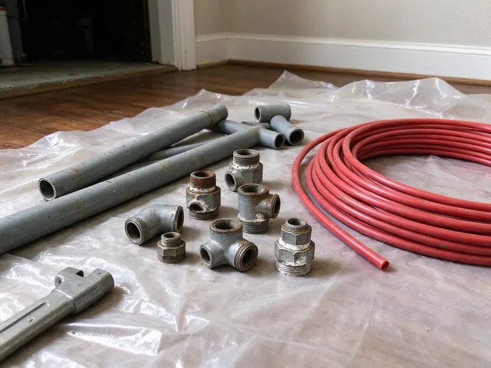
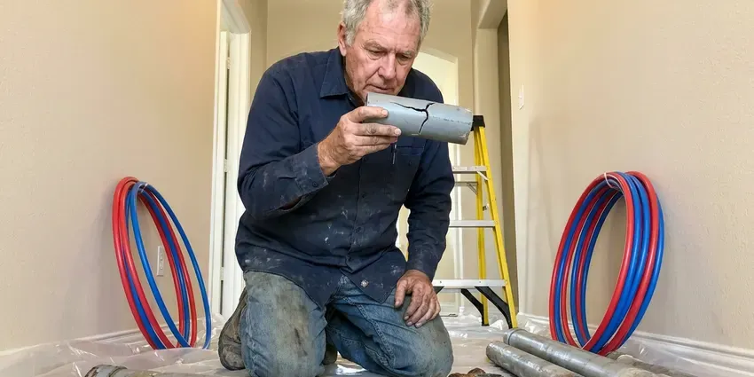

Tankless Water Heater Replacement in Kentwood, MI
Get endless hot water back in your Kentwood, MI home with a tankless water heater replacement done right, from gas line sizing to venting and descaling valves.
- Code Compliant Venting
- Licensed Gas Line Technicians
- Manufacturer Warranty Registered for You
- Same-Day Tankless Swaps

Need a Tankless Water Heater Replacement in Kentwood, MI?
Get a free estimate and a plain answer on whether tankless fits your house.
Replacing Tankless Water Heaters in Kentwood, MI Garages
CHV Plumbing handles tankless water heater replacement across Kentwood, MI, whether the current unit keeps breaking down or just cannot keep up with two showers at once. The old unit comes off the wall. A properly sized replacement goes up in its place.
Some of what we do:
- Haul-away of old water heaters.
- Correct model selection for your home and water.
- Correct venting and condensate drain setup.

Additional Plumbing Replacement Services in Kentwood, MI
When repairs are no longer enough, our replacement services in Kentwood, MI deliver durable upgrades that restore full performance.


Customers
Why Choose CHV Plumbing for Tankless Water Heater Replacement in Kentwood, MI?
Installed correctly the first time, a tankless unit avoids the callbacks that come from bad sizing or loose connections on the gas. That is the goal. It keeps costs down.
- Steady Supply, A correctly sized unit handles peak demand without the tank running dry.
- Right-Sized Units, We calculate gallons per minute and temperature rise for your fixtures instead of guessing from square footage.
- Less Waste, No standby loss means lower fuel use keeping water hot that nobody is using.
Citywide Coverage
Every neighborhood in Kentwood is in our service area for tankless replacement. Condos with interior units and houses with outdoor wall-mounts get the same crew and the same standard. Same pricing too.
Experienced Team
Ongoing training keeps our crew current on tankless installation and safety protocols for gas and condensing equipment from each manufacturer. Specs shift from year to year. Our crew keeps up.
Safety-First Approach
Gas connections and vent joints get the most attention on a tankless, because a leak in either one is dangerous. Relief valves get checked too. The unit has to pass before we go.
Trusted Certified Kentwood Plumbing Services Professionals
At CHV Plumbing, we take pride in licensed, certified plumbing services throughout Kentwood, MI. Credentials matter in this trade. Our plumbers hold recognized industry credentials, and they follow strict safety and quality rules on every repair, installation and maintenance call we run.
Call Us Now PHCC Plumbing Contractor Recognition
PHCC Plumbing Contractor Recognition Better Business Bureau (BBB) Accreditation
Better Business Bureau (BBB) Accreditation Angi Certified Pro
Angi Certified Pro ISO 9001 Quality Management Certification
ISO 9001 Quality Management CertificationPicking a Tankless for Your Kentwood, MI House
Emergency Tankless Replacement in Kentwood, MI
A tankless that will not ignite or leaks from the heat exchanger leaves you with no hot water at all. Call (810) 380-5918 any time it quits. We stock common models for same-day replacement. If your exact unit is back-ordered, a temporary repair can sometimes hold until it ships.

Like-for-Like Tankless Swaps in Kentwood
A cracked heat exchanger or a failed control board on an older tankless is usually not worth repairing past the ten-year mark. We match the new unit to your gas line, vent type and mounting spot whenever we can. Plan on four to six hours.
Tankless vs. Tank Replacement Cost in Kentwood, MI
Tankless costs more up front than a tank, often twice as much installed. Across 20 years the gap narrows, because one tankless may outlast two tanks, but your usage decides the payback. We price both.
Point-of-Use Electric Tankless in Kentwood
Point-of-use electric tankless heaters under a sink are a different animal from whole-house units. A small under-sink unit needs one 20 or 30 amp circuit and suits a distant bath or break room. Most take under two hours.
Commercial Tankless Racks in Kentwood, MI
Restaurants and salons run tankless racks hard. A rack of four units can draw more than 600,000 BTU, so we confirm gas pressure at the far unit with every burner firing. We work after hours when needed.
Emergency Tankless Water Heater Replacement in Kentwood
No hot water from a tankless usually shows up as an error code on the controller, and the code tells us half of what we need to know. Send us a photo of the display. A leaking heat exchanger means replacement, usually done same day or next day.
Navien Tankless Water Heater Replacement in Kentwood, MI
Navien NPE units are condensing, and the A models have a built-in recirculation pump and buffer tank that cut down on cold-water sandwiches. Navien also makes combi units that heat the house and the water. Both are in our wheelhouse.

Leaking Tankless Replacement in Kentwood
A leaking tankless can drip inside the cabinet for weeks before anyone notices the puddle. Close the cold isolation valve and the gas cock first. Then we look at whether the leak is a fitting or the heat exchanger itself, because one is a $20 fix and the other means a new unit.
Tankless Replacement Near You in Kentwood, MI
Searching for tankless water heater replacement near you in Kentwood, MI usually starts with an error code on the controller and a cold shower. Read us the code. It often points straight to the problem.
Knowing Michigan water and gas codes matters on a tankless job, since both shape the venting and the scale protection. CHV Plumbing serves Kentwood with trucks stocked for tankless installs. Send photos and we can usually quote over the phone.
CHV Plumbing at a Glance
- Licensed and insured plumbers serving Kentwood, MI
- Same-day appointments and 24/7 emergency response
- Clear written estimates, no hidden fees
- 4.9-star rated by 670+ Michigan customers
Kentwood Map
Kentwood Information
- Population
- 53,987
- Area codes
- 616/269/517
- Service area
- Kentwood and towns within a 40 mile drive
- Nearby
- Wyoming, Grand Rapids, Holland, Muskegon
Homes around Kentwood on private wells usually benefit from a water test before picking a filtration system, since mineral levels vary widely. Scale builds inside tankless heat exchangers over time, so a properly sized replacement with flush valves protects homes in Kentwood, MI from early failures.
Talk to a Plumber
Reach out to CHV Plumbing for honest, reliable plumbing from people who know the trade in Kentwood, MI.
Our Specialized Plumbing Services in Kentwood, MI
At CHV Plumbing, we handle the full list of plumbing services across Kentwood, MI. From leak detection to full system installs, our team works fast and charges fair prices on homes and commercial properties alike. Explore our core services below:


How a Tankless Replacement Goes in Kentwood, MI
We follow the same routine on every tankless replacement in Kentwood, from sizing to the final test.
Call or Book Online
Call (810) 380-5918 or use the online form. We ask about your hot water use and the current unit, then give you an upfront estimate.
Size the Unit
A licensed plumber visits your Kentwood home to look at gas, venting and water hardness and size the new tankless to your fixtures.
Install It
Once you approve, we remove the old unit, make any gas or plumbing changes and install the new tankless with correct venting.
Frequently Asked Questions About Tankless Water Heater Replacement in Kentwood
A like-for-like gas tankless swap usually runs $2,800 to $4,500 installed. Tank-to-tankless conversions run $4,000 to $6,500 with the gas and vent upgrades. You get it in writing first.
Navien, Rinnai, Noritz, Rheem and Bosch are all on our list. Each brand has its own install specs, and our techs follow them so the warranty holds. Your flow needs decide the pick.
We do not recommend it. You are dealing with gas sizing, vent clearances and condensate, and errors there risk CO or a voided warranty. A licensed installer is usually a warranty condition.
We would not. Without training on gas sizing and venting, you risk a voided warranty or CO problems.
Yes, for most homes. Tankless units only heat water when a tap opens, so they skip the standby loss of keeping 50 gallons hot all day, and the savings are biggest in homes with irregular hot water use. Big families save less per gallon.
Fifteen to twenty years for most units. That is roughly double the 8 to 12 years a standard tank water heater gives you, which helps offset the higher upfront price over time. Yearly flushing stretches it.
Heat exchangers usually carry 10 to 15 years from the manufacturer, and other parts 3 to 5. Our labor warranty covers the work. Registration is on us, which matters because some brands cut coverage if the unit is not registered.
A small leak from the cabinet is a strong sign. Add inconsistent temperatures, frequent breakdowns or weaker hot water pressure on a unit past 15 years and replacement usually makes more sense than another repair. We will tell you honestly.
Hear From Customers Who Hired Our Plumbing Experts

Tyler J.
We bought a taller comfort height toilet for my dad, who just had knee surgery. The plumber pulled the old one, found the flange was cracked, and replaced it before setting the new bowl. Took about two hours.
Toilet Installation · Battle Creek, MI
Laura S.
Our 40 gallon tank started leaking from the bottom after thirteen years. The tech hauled the old one out, set a new unit with a fresh expansion tank, and had hot water running in about four hours. He took the old tank with him too.
Water Heater Replacement · Wyoming, MI
Kevin O.
Before buying our house I paid for a sewer camera inspection. CHV Plumbing found a belly in the line that held standing water about forty feet from the cleanout. We used the video to get the sellers to fix it before closing.
Sewer Camera Inspection · Grand Rapids, MIJessica T.
We were adding a gas range in a kitchen remodel and needed a new line run from the meter. The plumber pulled the permit, ran the pipe through the crawl space, and had it inspected and approved within the week.
Gas Line Repair · Battle Creek, MI
Karen W.
After our third pinhole leak in copper, we stopped patching. CHV Plumbing gave us a written plan room by room and repiped the house in PEX while we stayed in it. The crew covered our floors every morning and cleaned up every night.
Repiping · Grand Rapids, MI
Mark T.
The floor drain in our office break room backed up every few weeks. The plumber ran a cable, then put a camera down and found roots at a joint about thirty feet out. Seeing it on the screen made the decision easy.
Drain Cleaning · Battle Creek, MI